정보처리산업기사 (2000-03-12 기출문제)
1과목: 데이터 베이스
1. 분산 데이터베이스의 장점으로 거리가 먼 것은?
- 자원의 공유
- 처리효율의 향상
- 신뢰성 향상
- 소프트웨어 개발비용 저렴
(정답률: 75%)

2. Which of the following is not a function of the DBA?
- schema definition
- storage struction definition
- application program coding
- Integrity constraint specification
(정답률: 60%)
3. 데이터모델에 관한 설명 중 옳지 않은 것은?
- 관계 데이터 모델은 개체와 관계 모두가 테이블로 표현된다.
- 계층 데이터베이스는 부자관계(parent-child relationship)를 나타내는 트리 형태의 자료 구조로 표현된다.
- 네트워크 데이터베이스는 오너-멤버관계(owner-member relation)를 나타내는 트리 구조로 표현된다.
- 데이터 모델은 데이터, 데이터의 관계, 데이터의 의미 및 일관성 제약조건 등을 기술하기 위한 개념적 도구들의 모임이다.
(정답률: 38%)
4. 색인 순차파일(ISAM;Indexed Sequential Access Method)에 관한 설명으로 옳지 않은 것은?
- 순차 처리와 랜덤 처리가 모두 가능하다.
- 레코드를 추가 및 삽입하는 경우, 파일 전체를 복사할 필요가 없다.
- 기본 구역(Prime data area), 색인 구역(Index area), 오버플로우 구역(Overflow area)으로 구성되어 있다.
- 해시 함수를 사용하여 레코드를 저장할 위치를 결정한다.
(정답률: 32%)
5. 다음 설명이 의미하는 A와 B의 관계는?
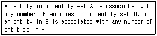
- one to one
- one to many
- many to one
- many to many
(정답률: 40%)
6. 데이터베이스의 장점에 해당되지 않는 것은?
- 데이터의 공유성
- 데이터의 중복성
- 데이터의 일관성
- 데이터의 무결성
(정답률: 80%)
7. 데이터 언어에 대한 설명으로 옳지 않은 것은?
- 데이터 언어는 사용 목적에 따라 데이터 정의어, 데이터 조작어, 데이터 제어어로 나누어진다.
- 데이터 조작어(DML)에는 질의어가 있으며, 질의어는 터미널에서 주로 이용하는 절차적(procedural) 데이터 언어이다.
- 데이터 제어어(DCL)는 데이터를 보호하고 데이터를 관리하는 목적으로 사용된다.
- 데이터 정의어(DDL)는 데이터베이스를 정의하거나 수정할 목적으로 사용하는 언어이다.
(정답률: 64%)
8. 데이터베이스의 기본 스키마에 해당되지 않는 것은?
- 내부 스키마
- 개념 스키마
- 논리 스키마
- 외부 스키마
(정답률: 75%)
9. 선형 자료구조에 해당하지 않는 것은?
- 리스트(list)
- 큐(queue)
- 데큐(deque)
- 그래프(graph)
(정답률: 77%)
10. 선형 자료구조에 해당하지 않는 것은?
- balanced sort
- cascade sort
- heap sort
- polyphase sort
(정답률: 40%)
11. 관계 데이터베이스와 가장 관련이 있는 것은?
- 정규화(normalization)
- 다형성(polymorphism)
- 캡슐화(capsulation)
- 상속성(inheritance)
(정답률: 53%)
12. 시스템 자신이 필요로 하는 여러 가지 객체에 관한 정보를 포함하고 있는 시스템 데이터베이스로서, 포함하고 있는 객체로는 테이블, 데이터베이스, 뷰, 접근권한 등이 있는 것은?
- 인덱스(index)
- 카타로그(catalog)
- QBE(Query By Example)
- SQL(Structure Query Language)
(정답률: 63%)
13. 트랜잭션(transaction)의 특성에 해당하지 않는 것은?
- 원자성(Atomicity)
- 일관성(Consistency)
- 지속성(Duration)
- 무결성(Integrity)
(정답률: 33%)
14. 데이터베이스(DBMS)의 필수 기능에 해당하지 않는 것은?
- 정의 기능(definition facility)
- 조작 기능(manipulation facility)
- 제어 기능(control facility)
- 사전 기능(dictionary facility)
(정답률: 75%)
15. SQL의 기술이 옳지 않은 것은?
- SELECT FROM WHERE
- INSERT INTO VALUES
- UPDATE TO WHERE
- DELETE FROM WHERE
(정답률: 78%)
16. FIFO(First In First Out) 방식의 작업 스케줄링(Job-Scheduling)을 위한 자료구조로서 가장 적합한 것은?
- 스택(Stack)
- 스트링(String)
- 큐(Queue)
- 그래프(Graph)
(정답률: 69%)
17. 데이터베이스의 관계모형에서 사영하는 테이블의 행을 구성하는 애트리뷰트 값들의 집합을 무엇이라고 하는가?
- DOMAIN
- TUPLE
- ENTITY
- MEMBER
(정답률: 50%)
18. 뷰(view)에 대한 설명으로 옳지 않은 것은?
- 뷰는 데이터의 접근을 제어하게 함으로써 보안을 제공한다.
- 뷰는 데이터의 논리적인 독립성을 제공한다.
- 뷰의 테이블의 가상 테이블이다.
- 뷰의 테이블은 물리적인 구현으로 구성되어 있다.
(정답률: 68%)
19. 기본 키에 속해 있는 애트리뷰트는 항상 널 값을 가질 수 없는 제약을 무엇이라고 하는가?
- 개체 무결성
- 참조 무결성
- 키 무결성
- 널 무결성
(정답률: 80%)
20. 계층형 데이터 모델에 관한 설명으로 옳지 않은 것은?
- 계층 데이터 모델이 지원하는 스키마의 논리적 구조는 트리 형태의 자료구조가 된다.
- 계층 정의 트리는 하나의 루트 레코드 타입과 다수의 종속 레코드 타입으로 구성된 순서 트리이다.
- 어떤 부모-자식 관계에서도 부모 레코드가 되지 못한 레코드 타입은 계층 정의 트리의 단말 노드이다.
- 레코드 타입들간에는 사이클(cycle)이 허용된다.
(정답률: 69%)
2과목: 전자 계산기 구조
21. 다음에서 수치 자료에 대한 부동 소수점 표현(floating point representation)의 특징이 아닌 것은?
- 고정 소수점 표현보다 표현의 정밀도를 높일 수 있다.
- 아주 작은 수와 아주 큰 수의 표현에는 부적합하다.
- 수 표현에 필요한 자리 수에 있어서 효율적이다.
- 과학이나 공학 또는 수학적인 응용에 주로 사용되는 수 표현이다.
(정답률: 57%)
22. 인터럽트 처리 방식 중 인터럽트 신호선을 공유하면서 연결 순서에 따라 우 순위가 결정되는 것은?
- Multiple Interrupt Line 방식
- Daisy-chain 방식
- software poll 방식
- Bus Arbitration 방식
(정답률: 53%)
23. 인터럽트 수행 후에 처리되는 것은?
- 전원을 다시 동작시킨다.
- 모니터 화면에 인터럽트 종류를 디스플레이 한다.
- 메모리의 내용을 지워서 다른 프로그램이 적재될 수 있도록 한다.
- 인터럽트 처리시 보존시켰던 PC 및 제어상태 데이터를 PC와 제어상태 레지스터에 복구한다.
(정답률: 74%)
24. 64가지의 각기 다른 자료를 나타내려고 하면 최소한 몇 개의 비트(bit)가 필요한가?
- 2
- 3
- 5
- 6
(정답률: 78%)
25. 프로세서의 제어 장치에 대한 설명 중 옳지 않은 것은?
- 고정 배선 방법과 마이크로프로그램 방식이 있다.
- 마이크로프로그램 방식은 고정 배선 방법보다 더 비싸다.
- 고정 배선 방법은 부품의 수는 최대화되기는 하나 작동 속도를 높이는데 목표가 있다.
- 마이크로프로그램 방식에서는 마이크로프로그램을 저장하기 위한 제어 메모리가 필요하다.
(정답률: 39%)
26. 주소 부분이 하나밖에 없는 1-주소 명령 형식에서 결과 자료를 넣어 두는데 사용하는 레지스터는?
- 어큐뮬레이터(accumulator)
- 스택(stack)
- 인덱스(index) 레지스터
- 범용 레지스터
(정답률: 59%)
27. 2진법의 수 1101.11을 10진법으로 표시하면?
- 11.75
- 13.55
- 13.75
- 15.3
(정답률: 70%)
28. 입출력장치와 기억장치와의 차이점 설명 중 옳지 않은 것은?
- 기억장치의 동작 속도가 빠르다.
- 입출력장치는 자율적으로 동작한다.
- 기억장치의 정보, 단위는 Word이다.
- 입출력장치가 착오 발생률이 적다.
(정답률: 41%)
29. BCD code 중에서 산술 연산 작용에 가장 적합한 것은?
- ASCII code
- Hamming code
- Gray code
- Excess-3 code
(정답률: 28%)
30. 캐시(cache) 메모리 설계시 고려할 사항이 아닌 것은?
- Cache size
- 전송 Block size
- 주변 입출력 장치
- Replacement algorithm
(정답률: 55%)
31. 마이크로프로세서 장치로 들어가는 4가지 입력 중에서 출력과 겸해져 쌍방향성인 것은?
- 전원공급 입력
- 클록 입력
- 인터럽트 입력
- 데이터버스 입력
(정답률: 42%)
32. 인터럽트 반응시간(interrupt response time)에 대한 설명으로 옳은 것은?
- 인터럽트 요청신호를 발생한 후부터 인터럽트 취급 루틴의 수행이 시작될 때까지이다.
- 일반적으로 하드웨어에 의한 방식이 소프트웨어에 의한 처리보다 느리다.
- 인터럽트 반응 속도는 하드웨어나 소프트웨어에 필요한 기억 공간에 의한 영향이 없다.
- 인터럽트 요청 신호의 발생 후부터 취급 루틴의 수행이 완료될 때까지의 시간이다.
(정답률: 40%)
33. 서브루틴의 수행 후 주프로그램으로 돌아오기 위한 복귀 주소는 어느 곳에 기억시켜 두는가?
- Program counter
- Stack
- Instruction register
- General register
(정답률: 47%)
34. 자기디스크 장치의 구성 요소가 아닌 것은?
- 읽고쓰기 헤드(read write head)
- 디스크(disk)
- 실린더(cylinder)
- 액세스암(accessarm)
(정답률: 36%)
35. 기억된 프로그램(program)을 하나하나 불러내어 명령을 해독하는 장치는?
- 입력장치
- 제어장치
- 연산장치
- 기억장치
(정답률: 54%)
36. 기억장치의 내용이 다음과 같을 때 어셈블리어로 LDA 34 명령을 직접 주소지정 방식으로 수행될 때 AC에 들어가는 값은 A라 하고, 간접주소 지정방식으로 수행될 때 AC 에 들어가는 값을 B라 하면 A, B 값은?
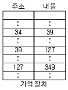
- A=34, B=39
- A=34, B=127
- A=39, B=127
- A=127, B=349
(정답률: 32%)
37. 자료의 병렬전송을 직렬전송으로 변환하는데 사용하기에 적합한 소자는?
- decoder
- encoder
- shift register
- ring counter
(정답률: 33%)
38. 다음 회로를 불(Boolean) 대수로 표시하면?
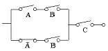
- B’C
- BC’
- BC
- (BC)’
(정답률: 53%)
39. 인터럽트 원인이나 종류를 판별하는 소프트웨어에 의한 방법은?
- Polling
- Daisy chain
- Decoder
- Multiplex
(정답률: 61%)
40. CPU 클럭 중 동기가변식에 관한 설명이 아닌 것은?
- 마이크로 오퍼레이션 수행시간의 차이가 현저할 때 사용한다.
- 중앙처리장치의 시간을 효율적으로 이용할 수 있다.
- 모든 마이크로 오퍼레이션의 수행시간이 유사한 경우에 사용된다.
- 모든 마이크로 오퍼레이션에 대하여 서로 다른 사이클을 정의할 수 있다.
(정답률: 54%)
3과목: 시스템분석설계
41. 발생한 데이터를 전표상에 기록하고, 일정한 시간 단위로 일괄 수집하여 입력매체에 수록하는 입력 형식은?
- 분산매체화 시스템
- 집중매체화 시스템
- 턴 어라운드(turn around) 시스템
- 온라인 단말기의 입력시스템
(정답률: 58%)
42. 코드(Coad)와 요돈(Yourdon)의 객체 지향 설계에서 구성요소로 거리가 먼 것은?
- 클래스와 객체요소
- 문제 영역 요소
- 사람과 상호 작용 요소
- 타스크 관리 요소
(정답률: 29%)
43. 출력 정보의 분배에 관한 설계 내용 중 거리가 먼 것은?
- 분배 책임자
- 분배 방법
- 분배 순서
- 분배 주기
(정답률: 32%)
44. 코드 설계시 주의해야 할 사항으로 거리가 먼 것은?
- 사람의 이용에 우선하여 취급이 쉽고 컴퓨터 처리에 적합해야 한다.
- 증감에 대비한 확장성이 있어야 한다.
- total system을 위한 체계성이 있어야 한다.
- 직원번호, 인사파일번호, 신분증번호로 나누어 개인의 코드를 각각 따로 부여해야 한다.
(정답률: 61%)
45. 랜덤편성 파일의 특징으로 옳지 않은 것은?
- 주소 계산에 의하여 직접 처리할 수 있다.
- 어떤 레코드라도 평균 접근 시간 내에 검색이 가능하다.
- 운영체제에 따라서는 키 변환을 자동적으로 하는 것도 있다.
- 키 변환을 위한 계산과정이 생략되므로 처리시간이 빠르다.
(정답률: 37%)
46. 객체 지향 분석에서 불필요한 부분을 생략하고 객체의 속성 중 가장 중요한 것에만 중점을 두어 개략화시킨 것을 무엇이라고 하는가?
- 상속성
- 클래스
- 추상화
- 메시지
(정답률: 55%)
47. 문서화의 목적으로 거리가 먼 것은?
- 시스템 보수 및 운용하는 그룹에 인계인수 작업이 용이하다.
- 개발자의 순서도 작성, 코딩, 디버깅, 테스트런만을 위해서이다.
- 시스템 개발 프로젝트의 관리가 용이하다.
- 개발 진척 관리의 지표가 될 수 있다.
(정답률: 65%)
48. 입/출력 파일 설계시 색인 순차편성 파일 구성에서 새로이 추가되는 레코드가 많아서 기본 데이터 구역 내에 더 이상 기록할 수 없을 때, 오버 플로우된 레코드를 기록하는 구역은?
- 트랙 오버플로우 구역
- 기본 데이터 구역
- 실린더 인덱스 구역
- 실린더 오버플로우 구역
(정답률: 57%)
49. 출력을 설계에 있어서 고려할 사항으로 가장 거리가 먼 것은?
- 여백의 중요성
- 논리적 연결성
- 위치 및 배열의 중요성
- 에러 검증장치
(정답률: 31%)
50. 시스템의 5대 기본 요소가 될 수 없는 것은?
- 입/출력
- 처리
- 제어
- 보수
(정답률: 84%)
51. 시스템의 신뢰성을 평가하는 MTBF의 의미는?
- CPU의 에러 동작 발생률
- 상호인접한 고장사이의 가동된 시간 평균
- 고장으로부터 복구시까지의 시간 평균
- CPU의 처리 속도
(정답률: 39%)
52. 파일 설계의 순서로 가장 적절한 것은?
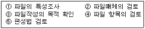
- ①,②,③,④,⑤
- ③,④,⑤,①,②
- ⑤,③,①,④,②
- ③,④,①,②,⑤
(정답률: 71%)
53. 파일 설계시 파일 성격에 관한 검토 사항으로 거리가 먼 것은?
- 파일명칭
- 적응업무
- 작성목적
- 항목배열
(정답률: 25%)
54. 소프트웨어 개발주기 모델의 하나인 폭포수형(water fall) 모델에서 개발될 소프트웨어에 대한 전체적인 하드웨어 및 소프트웨어 구조, 제어구조, 자료구조의 개략적인 설계를 작성하는 단계는?
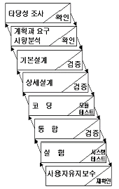
- 타당성조사 단계
- 기본설계 단계
- 상세설계 단계
- 계획과 요구사항 분석단계
(정답률: 68%)
55. 시스템의 기본적인 특성에 속하지 않는 것은?
- 제어성
- 목적성
- 정보성
- 자동성
(정답률: 44%)
56. HIPO에서 지정된 기능을 계층적으로 나타내는 것은?
- 총괄도표 (Over Diagram)
- 상세도표 (Detail Diagram)
- 구조도표 (Structure Diagram)
- 도식목차 (Visual Table Of Contents)
(정답률: 39%)
57. 중량, 용량, 거리, 크기, 면적 등의 물리적 수치를 직접 코드로 적용시키는 방식은?
- 순차 코드 (sequence code)
- 구분 코드 (block code)
- 표의 숫자 코드 (significant digital code)
- 연상 코드 (mnemonic code)
(정답률: 69%)
58. 어떤 특정한 조건을 부여하여 조건을 만족시키는 정보와 만족시키지 못하는 정보로 분리하여 처리하는 패턴은?
- 변환 (conversion)
- 집계 (summary)
- 추출 (extract)
- 분배 (distribution)
(정답률: 56%)
59. 구조적 분석의 특징으로 거리가 먼 것은?
- 사용자와 분석자간의 의사소통이 원활하다.
- 시스템 모형 작성에 필요한 도구가 제공되지 않는다
- 시스템 분석 시 사용자의 참여기회가 확대된다.
- 시스템을 분할할 수 있다.
(정답률: 69%)
60. 마스터 파일(Master File)의 변경하고자 하는 내용을 검사하거나 갱신할 때 사용되는 정보로서, 일시적인 성격을 지닌 파일은?
- Transaction File
- History File
- Summary File
- Trailer File
(정답률: 68%)
4과목: 운영체제
61. 교착상태 회피를 위하여 사용되는 은행원 알고리즘에 관한 사항으로 옳지 않은 것은?
- 은행원 알고리즘을 적용하기 위해서는 자원의 양이 일정하여야 한다.
- 은행원 알고리즘을 적용하기 위해서는 사용자의 수가 일정하여야 한다.
- 은행원 알고리즘은 모든 요구를 유한시간 안에 할당하는 것을 보장한다.
- 은행원 알고리즘은 대화식 시스템(interactive-system)에 적용할 수 있다.
(정답률: 59%)
62. 현 시점에서 가장 오랫동안 사용하지 않은 페이지를 선택하여 교체하는 알고리즘은?
- LRU 알고리즘
- FIFO 알고리즘
- LFU 알고리즘
- SECOND CHANGE
(정답률: 68%)
63. 사용자의 신원을 운영체제가 확인하는 절차를 통해 불법침입자로부터 시스템을 보호하는 보안은?
- 외부 보안
- 운용 보안
- 사용자 인터페이스 보안
- 내부 보안
(정답률: 59%)
64. 구역성(locality)에 대한 설명으로 옳지 않은 것은?
- 프로세스가 실행되는 동안 일부 페이지만 집중적으로 참조되는 경향을 말한다.
- 시간구역성을 최근에 참조된 기억장소가 가까운 장래에도 계속 참조될 가능성이 높음을 의미한다.
- 공간구역성은 하나의 기억장소가 가까운 장래에도 계속 참조될 가능성이 높음을 의미한다.
- 프로세스가 효율적으로 실행되기 위해 프로세스에 의해 자주 참조되는 페이지들의 집합을 말한다.
(정답률: 57%)
65. HRN(Highest Response-Ratio Next) 스케줄링 기법에서 가변적 우선순위는 다음 식으로 계산된다. (ㄱ), (ㄴ)에 알맞은 내용은?
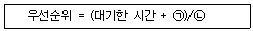
- (ㄱ) 서비스를 받을 시간 (ㄴ) 서비스를 받을 시간
- (ㄱ) 서비스를 받을 시간 (ㄴ) 실행된 시간
- (ㄱ) 실행된 시간 (ㄴ) 서비스를 받을 시간
- (ㄱ) 응답시간 (ㄴ) 서비스를 받을 시간
(정답률: 74%)
66. 페이지부재가 계속 발생되어 프로세스가 수행되는 시간보다 페이지 교체에 소비되는 시간이 더 많은 경우를 무엇이라고 하는가?
- 스케줄링(scheduling)
- 스래싱(thrashing)
- 프리페이징(prepaging)
- 작업세트(working set)
(정답률: 69%)
67. 교착상태를 방지하는 방법으로 가장 거리가 먼 것은?
- 점유와 대기 조건의 부정
- 불완전 상태 조건의 부정
- 환형 대기 조건의 부정
- 비선점 조건의 부정
(정답률: 56%)
68. 기억장치 할당 기법 중에서 프로그램을 주기억장치내의 공백 중에서 가장 큰 공백에 배치하는 기법?
- 최악 적합(worst fit)
- 최적 적합(best fit)
- 다음 적합(next fit)
- 최초 적합(first fit)
(정답률: 68%)
69. 입출력 수행 또는 기억장치의 배당을 위하여 발생하는 인터럽트는?
- 외부 인터럽트
- 슈퍼바이저 호출 인터럽트
- 기계검사 인터럽트
- 프로그램 검사 인터럽트
(정답률: 32%)
70. 암호기법의 종류가 아닌 것은?
- DES
- RSA
- Public key system
- FORK
(정답률: 58%)
71. 노화(aging)기법에 대한 설명으로 올바른 것은?
- 하나 또는 둘 이상의 프로세스가 더 이상 계속할 수 없는 어떤 특정 사건을 기다리고 있는 상태를 말한다.
- 프로세스들이 자원을 배타적으로 점유하고 있어서, 다른 프로세스들이 그 자원을 사용할 수 없도록 만든다.
- 프로세스가 자원을 기다리고 있는 시간에 비례하여 우선순위를 부여함으로써 가까운 시간 안에 자원이 할당될 수 있도록 한다.
- 프로세스에게 일단 할당된 자원은 모두 사용하기 전에는 그 프로세스로부터 도중에 자원을 회수할 수 없다.
(정답률: 45%)
72. Unix에서 파일 시스템은 어떠한 구조로 이루어지는가?
- 그래프 구조
- 계층적 트리 구조
- 배열 구조
- 네트워크 구조
(정답률: 54%)
73. 일괄처리 시스템에 대한 설명으로 옳지 않은 것은?
- 컴퓨터 시스템을 효율적으로 사용할 수 있다.
- 적절한 작업 제어 언어 (JCL)를 제공해야 한다
- 실행결과를 즉시 받아 볼 수 있어 응답시간이 짧다.
- 유사한 성격의 작업을 한꺼번에 모아서 처리하는 시스템이다.
(정답률: 74%)
74. 디렉토리(Directory) 구조를 확장한 임의 트리로 하나의 루트 디렉토리와 다수의 종속 디렉토리로 구성된 디렉토리는?
- 트리 구조 디렉토리
- 1단계 구조 디렉토리
- 2단계 구조 디렉토리
- 비주기 구조 디렉토리
(정답률: 59%)
75. 특정 레코드를 검색하기 위하여 키(Key)와 보조기억 장치사이의 물리적인 주소로 변환할 수 있는 사상 함수(mapping function)가 필요한 파일은?
- 순차 파일
- 인덱스된 순차파일
- 직접 파일
- 분할 파일
(정답률: 47%)
76. 처리기를 연결하는 기법 중 공유버스 기법에 대한 설명으로 옳지 않은 것은?
- 한 시점에 단지 하나의 전송만이 가능하다.
- 처리기나 기타 장치의 증설 절차가 복잡하다.
- 버스에 이상이 생기면 전체 시스템에 장애가 발생한다.
- 버스의 사용을 위한 경쟁상태가 발생하여 시스템 성능의 심각한 저해를 가져올 수 있다.
(정답률: 35%)
77. windows95에 대한 설명 중 옳지 않은 것은?
- PNP 기능을 지원한다.
- 멀티태스킹을 지원한다.
- 네트워크 기능이 강화되었다.
- 멀티유저 시스템이다.
(정답률: 42%)
78. 선점/비선점 스케줄링 기법에 대한 설명 중 옳지 않은 것은?(실제 시험에서는 정답이 다, 라 2개 였습니다. 이곳에서는 1번을 정답 처리 합니다.)
- 프로세스가 CPU를 강제적으로 탈취할 수 없으면, 이는 비선점 스케줄링 기법이다.
- 실시간 시스템은 보통 선점 스케줄링 기법을 사용한다.
- 시분할 시스템은 보통 비선점 CPU 스케줄링 기법을 사용한다.
- 선점 시스템에서 응답시간을 예측하기가 비선점 시스템에서 보다 용이하다.
(정답률: 72%)
79. 인접한 메모리의 주소를 주기억장치내의 다른 뱅크(Bank)에 둠으로써, 동시에 여러 곳을 호출할 수 있는 것을 ((ㄱ))기능이라 하며, 하나의 장치가 독립적인 기능을 하는 다른 장치의 상태를 검사할 수 있도록 허가하는 기법을 ((ㄴ))이라 한다. (ㄱ), (ㄴ)에 알맞은 용어는?
- (ㄱ) 기억장치 인터리빙 (storage interleaving) (ㄴ) 폴링 (polling)
- (ㄱ) 폴링 (polling) (ㄴ) 인터럽트 (interrupt)
- (ㄱ) 버퍼링 (buffering) (ㄴ) 스풀링 (spooling)
- (ㄱ) 스래싱 (thrashing) (ㄴ) 입/출력 채널
(정답률: 40%)
80. 기억장치관리에 반입(fetch)기법에 대한 설명으로 옳지 않은 것은?
- 주기억장치에 적재할 다음 프로그램이나 데이터를 언제 가져올 것인가를 결정하는 문제이다.
- 반입 기법에는 요구반입(demand fetch)기법과 예상 반입(anticipatory fetch)기법이 있다.
- 요구 반입 기법은 새로 반입된 데이터나 프로그램을 주기억장치의 어디에 위치시킬 것인가를 결정하는 방법이다.
- 예상 반입 기법은 앞으로 요구될 가능성이 큰 데이터 또는 프로그램을 예상하여 주기억장치로 미리 옮기는 방법이다.
(정답률: 43%)
5과목: 정보통신개론
81. 아래의 네트워크 구성형태 중 양쪽 방향으로 접근이 가능하여 통신외선장애에 대한 융통성이 있으며 근거리 네트워크(LAN)에서 가장 많이 채택되고 있는 방식은?
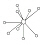
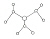
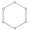
(정답률: 32%)
82. 다음중 비동기 전송방식과 거리가 먼 것은?
- 한 번에 문자 한 개씩 전송
- 비교적 고속전송에 사용
- start bit와 stop bit로 동기 조정
- 실제 전송시 잉여 bit의 상승률이 커짐
(정답률: 38%)
83. 디지털 신호 전송에 필요한 변조방식은?
- 진폭 변조
- 주파수 변조
- 위상 변조
- 펄스 부호 변조
(정답률: 44%)
84. OSI 7계층의 상위층부터 하위층까지 옳게 나열한 것은?
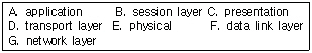
- A-B-C-D-E-F-G
- E-F-G-D-B-C-A
- G-B-C-D-E-F-A
- A-C-B-D-G-F-E
(정답률: 40%)
85. 1200[baud]의 모뎀이 2bit를 사용하는 경우 데이터의 전송속도[bps]는?
- 600
- 1200
- 2400
- 4800
(정답률: 70%)
86. OSI 7계층에서 데이터링크 계층의 기능에 대한 설명으로 적합한 것은?
- 경로 배정
- 전송유지 및 종료
- 패킷 관리
- 에러검출 및 정정
(정답률: 33%)
87. 무전기 통신과 같이 한 통신로를 이용하여 송신과 수신 중 한 가지 기능만으로 사용하되, 송수신 기능을 번갈아 사용 하므로써 상호정보를 교환하는 방법은?
- 단방향(simplex)통신
- 반단방향(half simplex)통신
- 전이중방향(full duplex)통신
- 반이중방향(half duplex)통신
(정답률: 63%)
88. Operation System의 목적으로 옳은 것은?
- 원시프로그램을 기계어로 번역하기 위한 프로그램이다.
- 사용자가 작성한 프로그램을 기계가 알 수 있는 언어로 번역해 주는 프로그램이다.
- 시스템의 신뢰성, 호환성, 적응성 등을 실현시켜 작업의 처리를 원할하게 한다.
- 제어프로그램의 감시하에 특정 문제를 해결하기 위한 프로그램이다.
(정답률: 55%)
89. 다음 중 정보통신 시스템의 특징이 아닌 것은?
- 거리와 시간의 극복
- 대형컴퓨터의 공공이용
- 대용량 파일의 공동이용
- 정보처리의 효율화
(정답률: 18%)
90. 전송로 상에 데이터가 흐르지 않은 것을 확인한 후 데이터를 보내는 방식으로 버스(bus)형태 통신망구조에 적합한 방식은?
- Token passing 방식
- CSMA/CD 방식
- TDMA 방식
- CDMA 방식
(정답률: 65%)
91. 다음 중 ISDN의 사용자 망 인터페이스에서 기준점이 아닌 것은?
- Terminal(T)
- rate(R)
- Terminal Adapter(TA)
- System(S)
(정답률: 42%)
92. 구내나 동일 건물 내에서 프로그램 파일 또는 주변장치를 공유할 수 있는 정보통신망은?
- ISDN
- LAN
- VAN
- SONET
(정답률: 74%)
93. HDCL의 프레임 구조에 포함될 수 없는 것은?
- 스타트 필드(Start Field)
- 플래그 필드(Flag Field)
- 주소 필드(Address Field)
- 제어필드(Control Field)
(정답률: 52%)
94. 정보통신시스템의 구성요소 설명으로 거리가 먼 것은?
- CCU, CCP, FEP는 통신제어장치이다.
- MODEM은 변복조장치이다.
- DTE는 데이터 에러감시장치이다.
- DSU는 신호변환장치이다.
(정답률: 65%)
95. 다음 중 온라인(On-Line) 시스템과 관계없는 것은?
- 실시간(real-time) 처리에 이용된다.
- 데이터의 전송과 처리과정에 사람이 개입되지 않는다.
- 정보전송장치와 정보처리장치 사이에 자기테이프 등의 기록매체를 경유한다.
- 데이터 발생지의 단말기가 원격지에 설치된 컴퓨터와 통신회선을 통해 연결된다.
(정답률: 46%)
96. 전파지연(propagation delay)이란 무엇을 뜻하는가?
- 신호가 한 노드에서 다음 노드로 도달하는데 걸리는 시간을 의미한다.
- 송신기가 한 데이터의 한 블록을 보내는 데 걸리는 시간을 의미한다.
- 한 노드가 데이터를 교환할 때 필요한 처리를 수행하는데 소요되는 시간을 의미한다.
- 노드의 처리 속도를 의미한다.
(정답률: 42%)
97. 다음과 같은 장점을 가지고 있는 전송매체는?
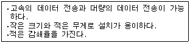
- 동축케이블(Coaxial cable)
- 꼬임선(Twisted pair cable)
- 스크린케이블(Screen cable)
- 광섬유케이블(Optical fiber cable)
(정답률: 69%)
98. 공중패킷교환망의 X.25 프로토콜의 가장 중요한 사항은?
- 수신여부확인
- 정보변환
- 오류검출과 정정
- 다중화
(정답률: 43%)
99. 단말기의 전송제어 기능이 아닌 것은?
- 입출력 제어
- 다중화 제어
- 송수신 제어
- 에러 제어
(정답률: 36%)
100. ISDN 채널에 대한 설명으로 틀린 것은?
- B채널은 기본적인 사용자 데이터 채널이다.
- D채널은 패킷교환이나 신호를 기다리지 않는 저속원격계측에도 사용된다.
- 기본적인 채널구조는 두 개의 반이중 64[Kbps] A채널과 하나의 반이중 16[Kbps] C채널로 규정되고 있다.
- H채널은 고속의 사용자 정보를 위해 사용된다.
(정답률: 61%)